Shuja Abidi
Research Scholar in AI and Robotics
Shuja Abidi's research interests are in AI and robotics, in five fields:
- Human-Robot Interaction Reading face, gaze and voice to notice when an interaction is going wrong. Open the HRI page
- JEPA How machines can learn useful visual features without labels. Open the JEPA page
- CBCL How a robot can keep learning new things without forgetting old ones. Open the CBCL page
- Semantic Safety How a robot can use what objects are, not just where they are, to move safely. Open the Semantic Safety page
- Robotics Quadruped and humanoid robots in simulation that build a map, plan a path around people and walk it. Open the Robotics page
Jepa-CBCL-PR joins JEPA and CBCL: can a stronger encoder help a robot's memory?
Alongside this research, Shuja has more than 20 years of industrial experience in military simulation, and has built commercial AI products. See the simulators and the AI products
1
Human-Robot Interaction
Can a robot tell when a person is confused, surprised or not paying attention, and respond more safely?
The project, Bidirectional Expectancy Violation for Risk-Aware Human-Robot Collaboration, looks for violations in both directions:
- Personal Deviation Violation (PDV): the person drifts from their own normal behaviour, or misses a response the robot expected.
- Human Expectation Violation (HEV): the person reacts to an unexpected robot action.
Each violation would be attributed to the person or the robot, and would select a graded safety response that can only tighten the robot's behaviour.
Work so far
- A real-time prototype that tracks facial action units, gaze, head pose and voice, learns a person's baseline and flags deviations.
- A FLAME 3D face and avatar pipeline for making synthetic personal data from a 2-minute video.
- A review of more than ten recent doctoral theses and the ERR@HRI challenge papers on robot errors and human reactions.
Methods
- Per-person change detection: Mahalanobis distance and CUSUM
- Time-series classification: MiniRocket + Hydra
- 2D (OpenFace) compared with 3D (FLAME) facial features
Planned evaluation datasets
REFLEX, ERR@HRI, BAD, HRI-confusion and UE-HRI
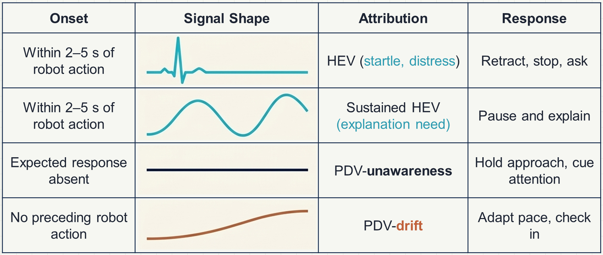
2
JEPA
Learning by predicting hidden parts of an image in feature space, with no labels and no pixel reconstruction.
This study works through the ideas behind JEPA by building them: why such models can collapse, predicting pixels compared with predicting features, a Vision Transformer from scratch, and then a small I-JEPA.
It then joined fields 2 and 3 in a side experiment, Jepa-CBCL-PR. It replaces CBCL-PR's ResNet-34 with frozen I-JEPA encoders, to ask how much the encoder matters for continual learning.
The strong encoder clearly helped. The small encoder trained here fell well behind on new classes, but still beat an untrained one, so it learned something that transfers.
Jepa-CBCL-PR on CIFAR-100
| Frozen encoder | Accuracy |
|---|---|
| Meta's I-JEPA | 74.23% |
| ResNet-34 | 62.59% |
| Small I-JEPA, trained here | 26.67% |
| Untrained encoder | 10.53% |
CBCL-PR, using all training images. An exploratory side experiment. The large encoders were trained on bigger images and far more data.
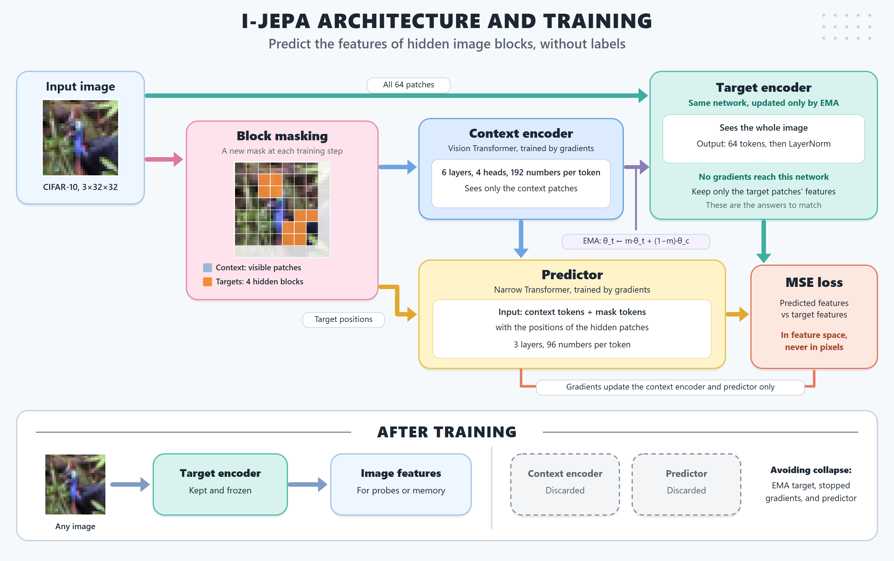
3
CBCL
Cognitively-inspired continual learning: remembering classes as compact statistics, not stored images.
Robots working with people need to keep learning, often from very few examples, without forgetting. Both methods were implemented from the thesis and papers, compared with the official CBCL code, and tested on CIFAR-100, Caltech-101 and CUBS-200-2011 against the FLB baseline. The code passes 17 hand-checked tests.
One lesson from this work: the voting formulas in the thesis and in the official code differ. With 5 images per class on Caltech-101, they gave 78.92% and 84.65% in these runs.
Next: finish the full benchmark, and run ConceptGraphs to learn how robots build maps of objects. After that, the aim is to add teaching by a person, and then a memory that can ask about discrepancies.
Reproduction on CIFAR-100
| Method | This work | Thesis |
|---|---|---|
| CBCL-PR | 56.76 ± 0.57% | 56.98% |
| CBCL | 53.16 ± 1.94% | 54.7% |
5 images per class, 10 classes per step. CBCL-PR over 3 runs, and CBCL over 10.
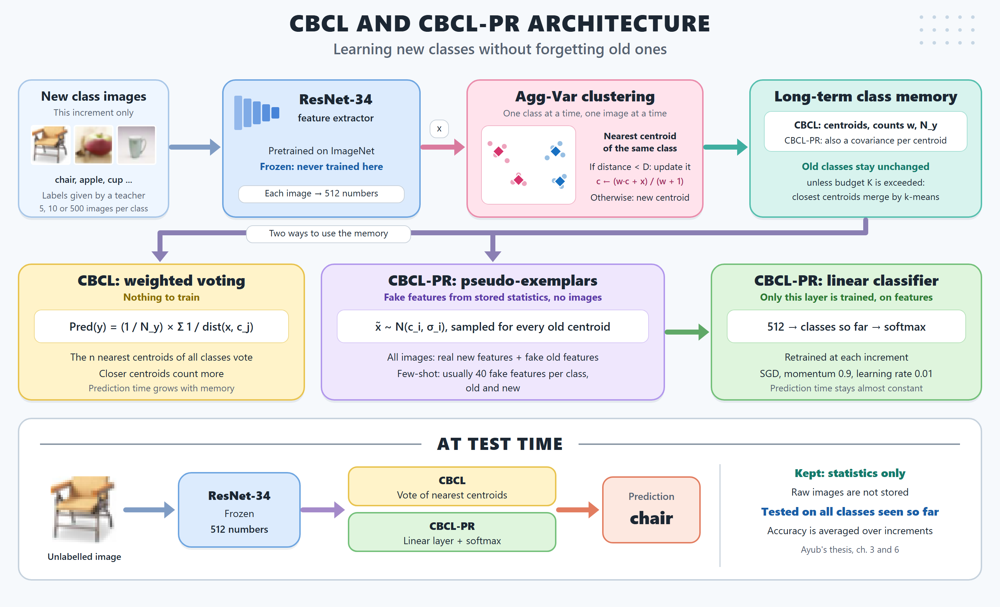
4
Semantic Safety
Using what objects are to keep a robot safe: a cup of water must not pass over a laptop, but a dry sponge can.
A filter that only avoids collisions can still break common-sense rules. This study rebuilds the idea in six lessons: a safety filter on a point robot, several constraints with superquadric shapes, semantic regions, the filter on a 7-joint Franka FR3 arm, whole-arm collisions and rotation, and finally a simulated kitchen.
One lesson from this work: zero violations came with a real cost. Many semantic runs stopped before the goal. The scripted motions can't steer around anything, and the protective spheres may be too large, but these causes haven't been separated yet.
The filter also runs in a web browser, with nothing to install, and matches the Python results on 41 of 41 checks.
Next: rules from an LLM, then perception from RGB-D, then testing moving objects and position errors.
Simulated kitchen, 40 runs per filter
| Filter | Worst violations | Reached goal |
|---|---|---|
| No filter | 61.9% | 100% |
| Geometric | 42.0% | 95% |
| Semantic | 0.0% | 72.5% |
Violations: % of steps breaking a rule, in the worst of 8 scene and object cases. Reached goal: the average across those cases. The rules, motions and layout are this study's own, so compare the pattern with the paper, not the values.
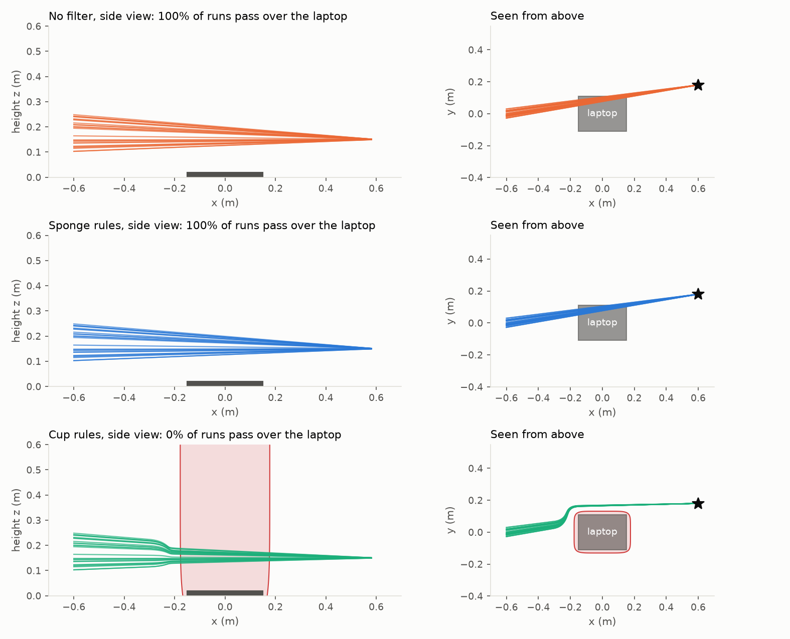
5
Robotics
Legged robots that see people, plan around them and walk there.
A Unitree Go2 quadruped and three Unitree humanoids (G1, H1 and H1-2) each build a map from their own RGB-D camera and 360° lidar, track walking people, plan a path that respects personal space, and walk it. Every robot takes the same velocity command, so one planner drives them all.
For the Go2, three walking controllers are compared: a hand-written trot, an MIT Cheetah-style convex MPC rebuilt from Di Carlo et al. (2018) with my own QP solver, and a learned RL policy.
One lesson from this work: human-aware planning was worse than normal planning until a 360° lidar was added, because a forward camera misses people coming from the side.
Results in simulation
| Test | Result |
|---|---|
| People crossing the path, G1, 12 runs | human-aware: closest 0.96 m median, 0.49 m worst; normal: 0.61 m, one collision |
| Go2 ramps 5°–25° | MPC crosses all; simple trot stuck from 15° |
| Demo paths, all four robots | 0 falls |
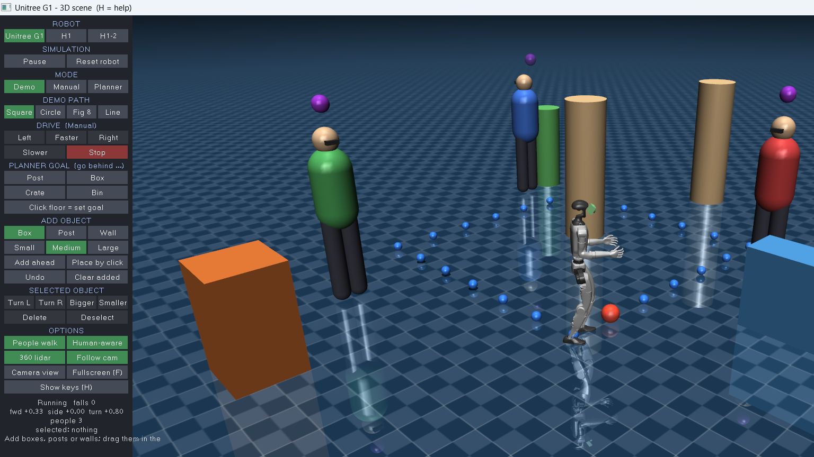
Industrial experience: military simulation
More than 20 years of designing and building military training simulators, from hardware to software.
Shuja began developing military and medical training simulators in 2002 at Data Communication and Control, including tank, small-arms and car simulators, and built distributed simulation infrastructure and 3D graphics engines.
Since 2007, Shuja has been Chief Technology Officer of Soft Innovative Systems, leading platform selection, system architecture and technical design, and building the engineering team. The company's simulators pair realistic hardware with an instructor station that records, replays and scores each trainee.
- 350+ simulators delivered
- 11 product lines
- 2 offices in Pakistan
Company figures, as stated on sispvt.com.
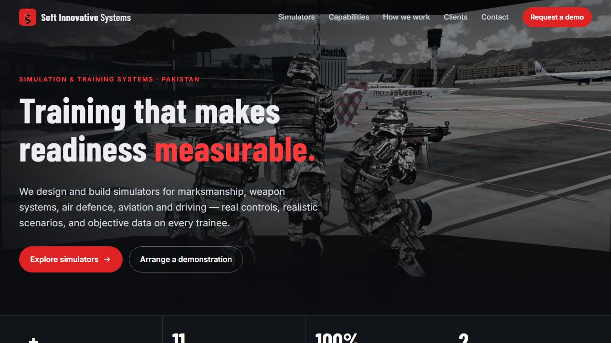
Visit the company websiteProjects
Each picture opens the project's page on the company website.
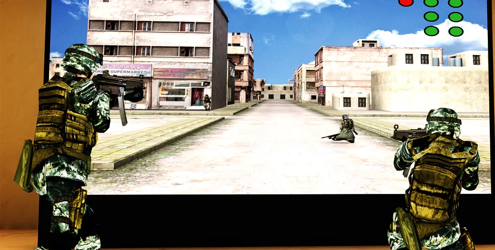
MarksmanshipShooters Profile SystemObjective marksmanship training that measures every shot.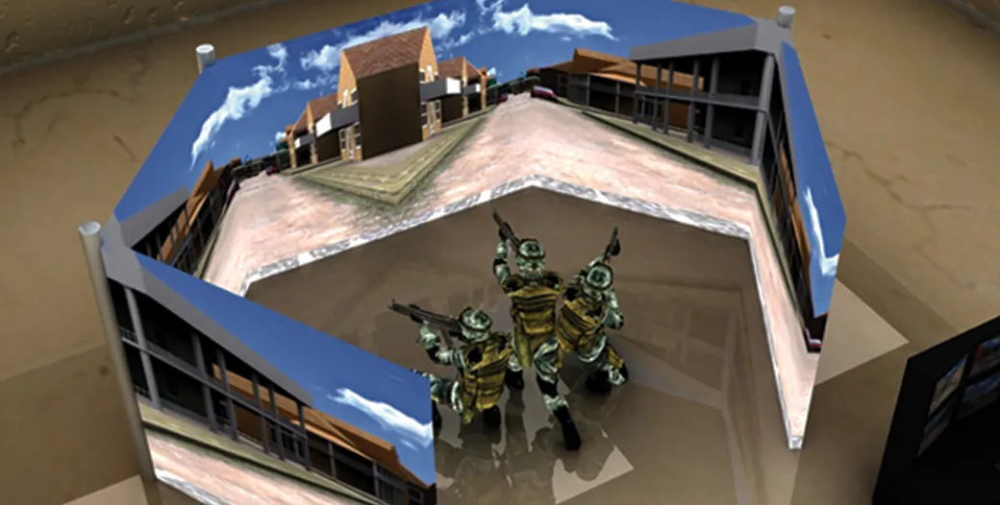
MarksmanshipAdvance Training Shooting SimulatorClose-quarter battle training across multiple screens.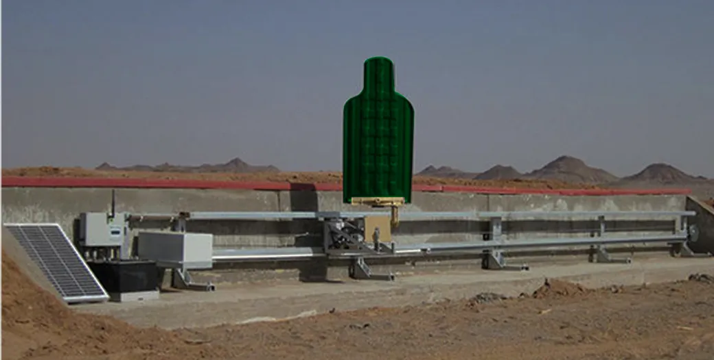
MarksmanshipRange Firing Training SimulatorSmart, moving, return-fire targets for the live range.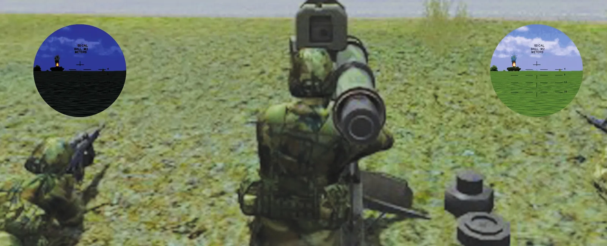
Weapon systemsATGM SimulatorIndoor anti-tank guided missile operator training.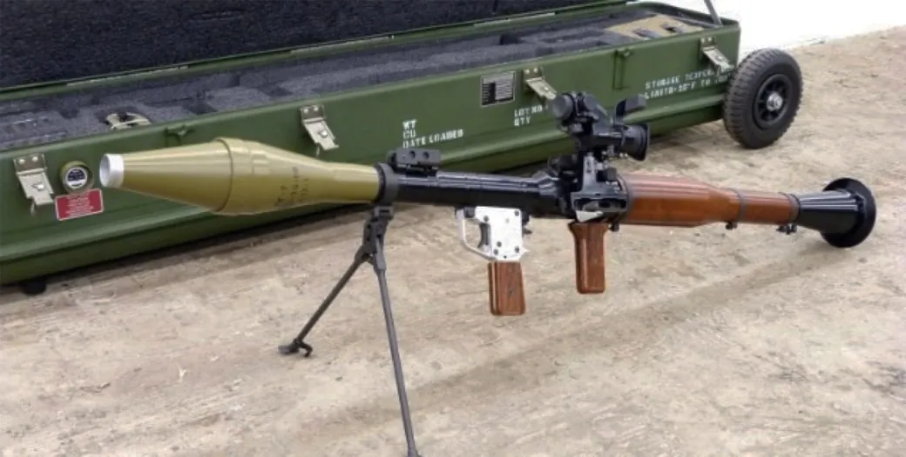
Weapon systemsRPG-7 SimulatorAnti-tank grenade launcher training, indoors.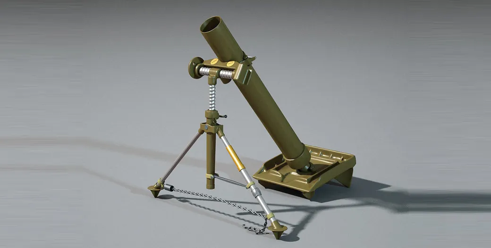
Weapon systemsMortar Training SimulatorComplete mortar drill and fire-control training.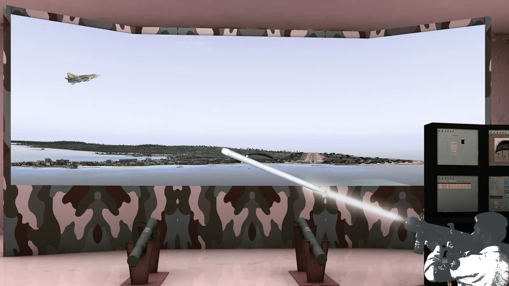
Air defenceSurface to Air Weapon SimulatorDetect, acquire, track and engage, with real launcher controls.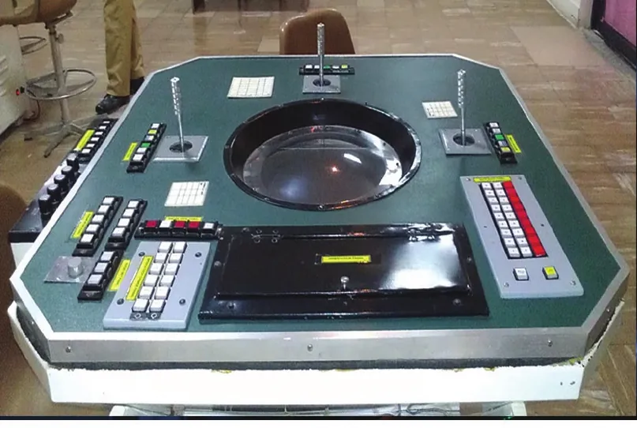
Air defenceRadar SimulatorThe feel and behaviour of the original device.- AviationFlight SimulatorPilot training on the ground.
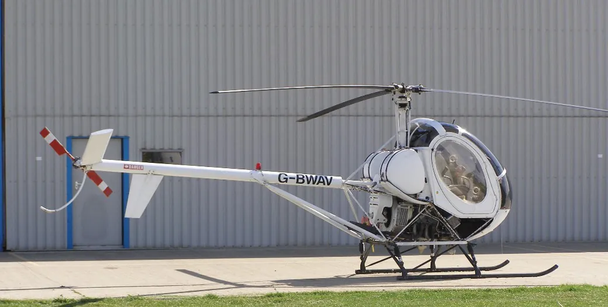
AviationHelicopter Pilot Training SystemRotary-wing training in a real cockpit module.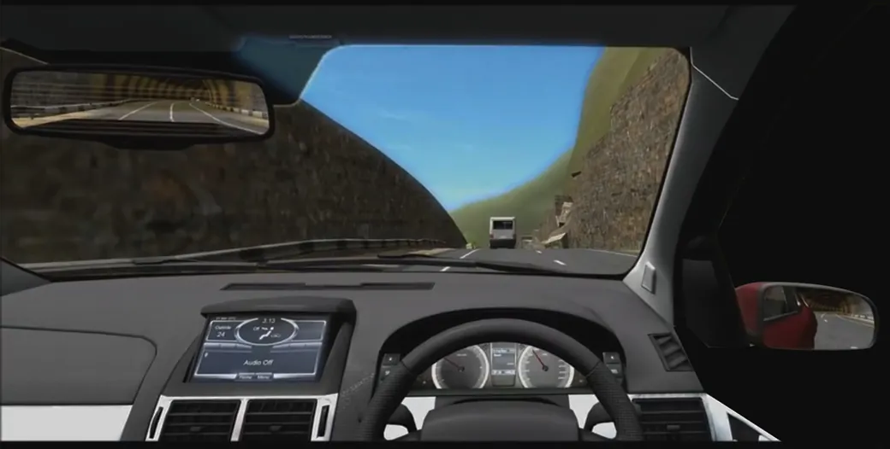
VehicleDriving SimulatorCommercial simulator designed and delivered end to end, with Unreal Engine software and a real dashboard and controls.
AI Products
Commercial AI in two areas: computer vision for fashion, and language models for business.
Virtual try-on, Vocal Eye (2021 – 2023)
AI that shows a person wearing a chosen garment by changing the clothes in their photo. The team built and trained its own implementation of CP-VTON (Characteristic-Preserving Virtual Try-On Network) and its successor, CP-VTON+.
- Reading the photo: human parsing (DensePose), pose detection (OpenPose) and cloth segmentation (U-Net).
- Fitting the garment: a geometric matching stage warps the clothing to the person's body with a thin-plate spline.
- Making the image: a try-on stage blends the warped garment with the person through a composition mask, designed to keep the garment's texture and logos.
- Also in the pipeline: masked-image composition and diffusion-based garment synthesis.
Methods: CP-VTON (Wang et al., ECCV 2018); CP-VTON+ (Minar et al., CVPR Workshops 2020).
AI assistants for business, Splutter (2024 – present)
A SaaS platform where companies build AI chatbots and voicebots and deploy them on their own websites within minutes. More than 100 companies use it. Shuja is the platform's architect and led its core AI integration.
- Knowledge: companies load a knowledge base from websites, PDFs, text and manual entry.
- Answers: retrieval-augmented generation (RAG) bases each reply on the company's own content, using OpenAI and other language models.
- Models: AI models trained for the platform's assistants, and a bot configuration that lets models be swapped.
- Reach: web, SMS, WhatsApp, Messenger and Slack, for customer support, sales and lead capture.
Experience
More than 25 years of building real-time systems that people use and train on.
Chief Technology Officer, Soft Innovative Systems
Leads platform selection, system architecture and technical design for simulation and software products. Built and leads the engineering team.
Co-founder, Vocal Eye
Built virtual try-on with an in-house, trained implementation of CP-VTON and CP-VTON+, along with other AI products. More
Technical Head, Devaj Technology
Led delivery of a restaurant management system used by more than 2,000 clients in Pakistan, and a cloud retail management system.
System Architect and Team Lead, Data Communication and Control
Developed military and medical training simulators, distributed simulation using HLA and NDDS, and 3D graphics engines.
Research Assistant, Muhammad Ali Jinnah University
Lecturer, Hamdard University, Karachi
Skills
- Human sensing
- FLAME 3D face fitting, FlashAvatar, facial action units, gaze and head pose, openSMILE voice features, Whisper
- AI and machine learning
- OpenFace, MediaPipe, DensePose, OpenPose, U-Net, CP-VTON and CP-VTON+ virtual try-on, diffusion models, LLM integration (OpenAI), RAG, MiniRocket, Mahalanobis distance, CUSUM
- Semantic safety and robot control
- Control barrier function safety filters, quadratic programming (OSQP), superquadrics, MuJoCo, Franka FR3 inverse kinematics
- Legged robots
- MuJoCo, Unitree G1, H1, H1-2 and Go2, convex MPC, RL policies (ONNX), RGB-D and lidar mapping, A* and human-aware planning, ROS 2
- Simulation and graphics
- Unreal Engine, Unity, OpenGL, XNA/DirectX, HLA and NDDS, simulator hardware integration
- Programming
- Python, C#, C++, SQL, Next.js, Flutter, React Native
Contact
shujaabidi2020@gmail.com
Based in Pakistan. Full CV and references are available on request.